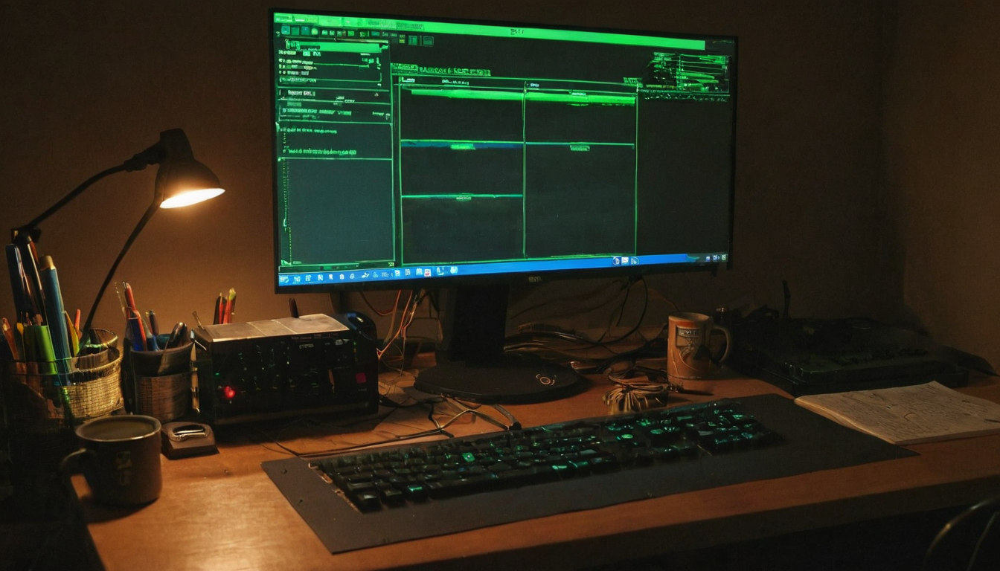
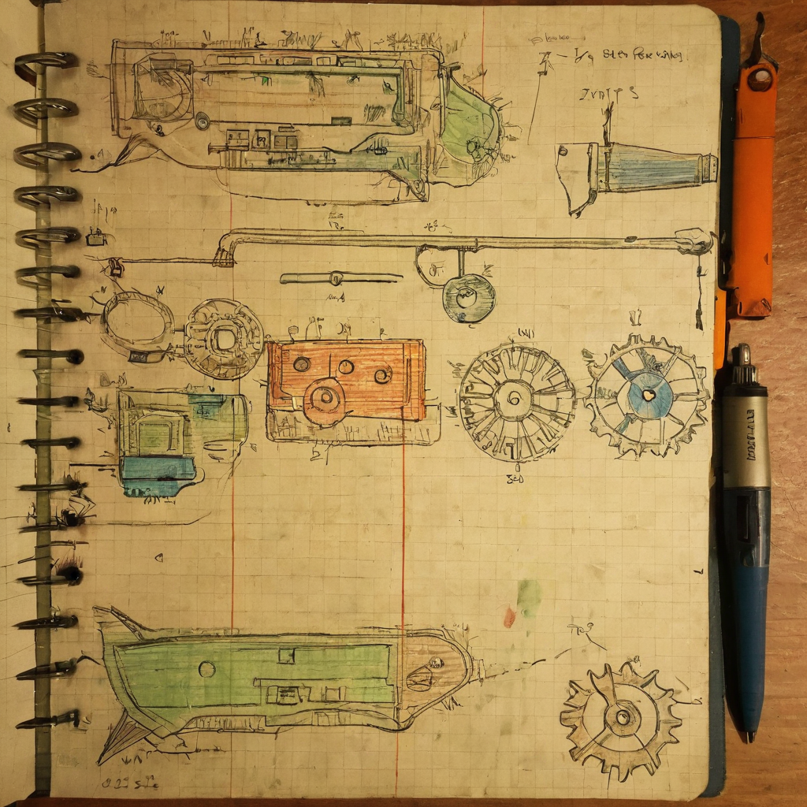

I like posts that turn something abstract into something you can actually watch tick by. A block height countdown does exactly that. It takes "a hard fork is coming" and turns it into "here is the number, here is the gap, here is roughly how many days." That is why this one stopped my scroll.
@ArtBoss007 shared a short update on X with the current Chia network height, somewhere around block 9,012,681, and the target block for the Chia 3.0 hard fork, block 9,562,000. Doing the subtraction puts the gap at about 550,000 blocks, which the poster estimates at roughly 120 days out. The post closes by asking if this is the "spawn point" for Chia, tagging $XCH, #OneMarket, #RWA, and #Chia3. No external links were included, so this is really just a heads up post, a marker in the timeline rather than a technical breakdown.

Hard forks are the moments a blockchain actually changes shape. Everything before the fork block runs the old rules, everything after runs the new ones. For a chain like Chia that has spent years building out things like DataLayer, plotting improvements, and now conversations around real world assets (RWA) tied to the #OneMarket tag, a named hard fork with a real block target gives the community something concrete to plan around instead of a vague "sometime this year."
It also matters because block height countdowns are useful signals for a specific audience: node operators, farmers, wallet developers, and anyone building on top of the chain. A fork date is a deadline. Deadlines are when people actually finish the work.
What it does: Converts a future hard fork into a countdown anyone can track by checking their own node's block height against 9,562,000.
Who it helps: Farmers and full node operators who need to know when to update their software, developers building anything that touches consensus rules, and anyone in the RWA or #OneMarket conversation who wants to time their own plans against the fork.
What problem it solves: Vague launch windows make people complacent. A block number does not move for anyone, so it is a cleaner way to communicate "this is really happening" than a rough calendar guess.
What still needs work: The post itself does not link to release notes, a client update, or an official announcement confirming scope of Chia 3.0. Block time can also drift a bit depending on network conditions, so the "120 days" is an estimate, not a guarantee.
What I would test first: If I were running a node or farming, I would check my client version against whatever release is meant to support the fork well before the countdown gets close, rather than waiting for the last few thousand blocks.
I like seeing the Chia community rally around a real block number instead of just hype talk. It is a small post, but it does something useful: it gives people a concrete reason to check their setup and make sure they are ready. I do not have the official Chia 3.0 release notes in front of me, so I cannot speak to every feature that is landing with it, and I would treat "120 days" as a rough estimate rather than a locked calendar date since block times can shift a little. But the instinct behind the post, tracking the fork like a countdown clock, is exactly the kind of grounded, community-first behavior that makes we want to keep watching this space.
Worth keeping an eye on official Chia blog posts or client release notes as the fork block gets closer, since that is where the real technical details of Chia 3.0 will show up. It is also worth watching whether major farming pools and wallet providers post their own upgrade timelines as the countdown shrinks. None of this is guaranteed to hit exactly on schedule, but a named block target is a good reason to actually pay attention rather than assume it is far off.
Source: X post by @ArtBoss007, https://x.com/i/web/status/2078029524806111676, retrieved on 2026-07-17. No external references were included in the original post.